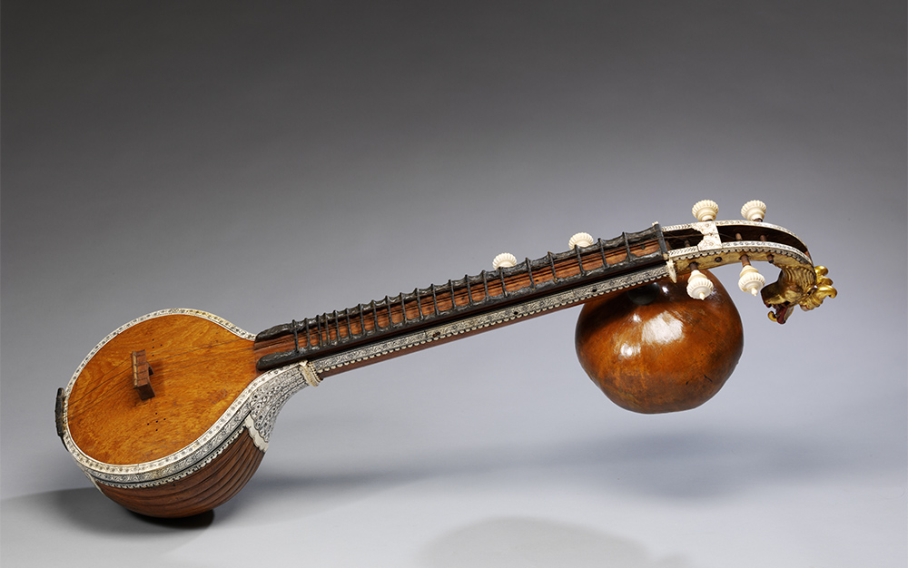

Stringed Instruments
Guitar

This guitar produces sound through the vibration of strings. The sound is produced by plucking with the fingers or with a pick on the string. The string vibrates at a certain frequency and also creates many harmonics. It is one of the famous musical instruments. These guitars are one of the major elements of today’s music. So if you are into playing guitars, the music industry is waiting for you with open arms.
Audio Clip
Tambura

The tambura is a long, stringed instrument made of light hollow wood, with either a wooden or a gourd resonator. It is typically used in accompaniment with other instruments, providing a drone pitch. Some of the tamburas in the Museum’s collection are not full-sized instruments, but rather miniatures created for their aesthetic appearance. The artistic craftsmanship on the inlay in these objects is beautiful. India has a long history of creating musical instruments as decorative objects, and that tradition is represented in the Museum’s collection.
Audio Clip
Sitar

The sitar is easily India’s most famous musical instrument overseas, having been popularized in the West by George Harrison of the Beatles, who studied with Ravi Shankar, one of the greatest sitarists of the twentieth century. The sitar has its roots in both the Persian setar as well as in the vina. Like many stringed instruments used in classical Indian music, the modern sitar has sympathetic strings that sound only when one of the primary strings is struck on the same note. These strings, which are never played by the performer, resound in sympathy with the playing strings, creating a polyphonic timber that many have come to associate with India through the popularity of this instrument. It is interesting to note, however, that the addition of the sympathetic strings is a relatively recent development in Indian music starting in the late nineteenth century. The use of sympathetic strings is known to have existed in other parts of the world prior to their initial use in India.
Audio Clip
Vina
the vina is one of the most commonly depicted instruments in Indian iconography. The vina has taken many forms in both South and North India. In North India, it was called the bin or the rudravina, and was the predecessor of the sitar. It was often built of two large gourd resonators connected by a piece of bamboo, with frets held on with wax. Most of the vinas depicted in iconography are rudravinas. In the South, the vina—or saraswati vina—continues to be the most popular stringed instrument in classical music. In its basic shape, the vina is a hollow wooden stringed instrument with two gourd resonators (though there can often be more than two or sometimes only one gourd resonator). The gottuvadyam, or chitravina, is another important instrument in Karnatak music. Unlike the rudravina and the saraswati vina, the gottuvadyam has no frets and is played with a slide using a method similar to that of the Hawaiian slide guitar.